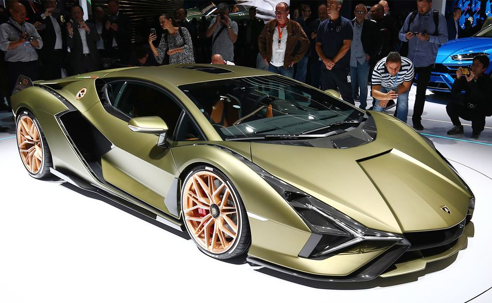
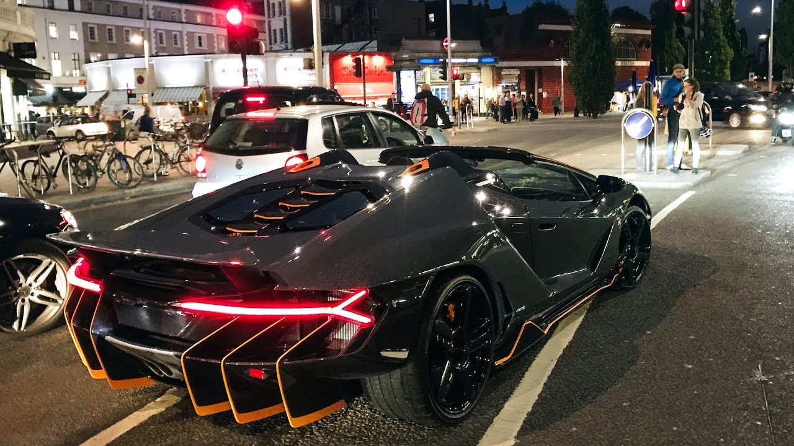

The Lamborghini 'Tormenta' (the name not quite yet confirmed) is one of the most anticipated releases from the major car brand Lamborghini.
It has been anticipated ever since the Lamborghini Aventador Ultimae was released in 2022. It was confirmed that this would be the last ever production model of the long reigning Aventador which was a massive success for the company with over 12,000+ units sold worldwide.

2022 Lamborghini Aventador Ultimae LP-780-4
The Lamborghini 'Tormenta' as some sources online have rumoured it to be called, takes on a complete new design langauage and according to some spy shots of the new flagship Lamborghini, it takes some design cues from the Lamborghini Sian FKP 37. The Lamborghini Sian is a hybrid motor mated with Lamborghini's iconic 6.5L V12 from the current Aventador tuned to 808bhp compared to the original Aventadors 700bhp.
2019 Lamborghini Sian FKP 37
With the new electrified engine, the Tormenta could churn out up to 1,000 horsepower. Spy shots taken by Varryx tease the car, but Lamborghini has hidden it as best it can with camouflage wrap.

The front of the car indicates Y shapes. There is speculation it will have the same Y shaped headlights as the Sian FKP 37, as can be seen in this spyshot. It also shows vents on the hood and a fin on both sides of the supercar, digging into huge intakes. On the sides, it shows the double air intakes with fins running horizontally down the middle similar to the Lamborghini Centenario. The tail lights also appear to be the same Y-shape as the Centeratio pictured below.
2017 Lamborghini Centenario Roadster LP 770-4
The new replacement Lamborghini can be seen as to sharing many similar design cues from the special edition models which have a complete new design language from the Aventador, such as the Centenario mentioned and the Sian. These special edition models show us what Lamborghini's plan is for the future and their vision for the company. Here we can see the new Lamborghini on the move, confirming that it will of course be a V12 once again from the low hum as it cruises along.
Footage: @Varryx on Youtube
That's all that we know at the moment as Lamborghini are doing their best to keep everything under wraps and as top secret as possible, so we will just have to wait and see what the final production model will look like in the upcoming months when the car will be officially unveiled.